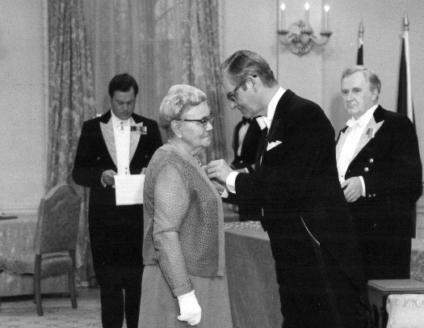

Nurse Myra Bennett (née Grimsley)
Life of Service

Nurse Bennett receiving the Order of Canada
Myra Maud Grimsley was born in London, England, on April 1, 1890, the second of nine children of Patty Ellen Crapper and Stephen Alexander Grimsley.
She attended London County Council schools, but left at age 14, having completed her course of study, to work in a tailor's shop. At 20, she enrolled in a nurse's training program at a hospital near Manchester. To cover the cost of her training, Grimsley worked as a district nurse at the railway junction town of Woking, in Surrey, from 1911 to 1915. She then enrolled in a six-month course in maternity nursing at Woolwich, where she earned the prestigious and much-coveted Central Midwives' Board certificate.
In 1920, Grimsley made a decision that would dramatically affect her nursing career. Aware of the need for nurses in Canada, she planned to spend several years in Saskatchewan under the auspices of the Overseas Nursing Association. In preparation for this move she completed courses in midwifery and anesthesia at the Clapham School of Midwifery. While awaiting her assignment in Canada, she was approached by Lady Constance Harris, wife of the Governor of Newfoundland, who was in England recruiting nurses on behalf of the Outport Nursing Scheme, a forerunner of the Newfoundland Outport Nursing and Industrial Association (NONIA). Harris alerted Grimsley to the desperate need for nurses in the isolated communities of coastal Newfoundland and convinced her to venture there instead.
Arriving in Daniel's Harbour on May 27, 1921, Grimsley spent the next eight months as a boarder with the Moss family. Her duties went far beyond the traditional responsibilities of an English midwife: counselling expectant mothers, delivering babies and providing post-partum advice. In addition to dealing with complications that might arise during delivery, she was also expected to suture wounds, set broken bones, extract teeth, treat communicable diseases and provide much-needed information on health care and nutrition.
For this work her clinic, dispensary, operating and delivery rooms were located in the houses of the people she cared for. In order to visit some of her patients, she often had to travel many miles by foot, by horse and slide, or by small boat, sometimes in the dead of winter, in all winds and weathers. She gave little thought to her own safety when there was a sick or injured person waiting for her at the end of her journey.
During her first year in Daniel's Harbour, Grimsley met and fell in love with local merchant and fisherman, Angus Bennett. They were married Jan. 26, 1922. Shortly after their marriage they moved into a newly constructed house that Angus had built, where her kitchen would serve as her clinic for the next two decades.
Bennett retired from her formal nursing duties in 1953 but continued to treat patients for another 30 years. She was well into her 90s when she stopped seeing patients. It is reported that during her years as a practicing nurse she delivered 3,000 to 5,000 babies and pulled more than 3,000 teeth.
She received both National and International recognition of her tremendous contribution to the health and well-being of the people who lived along the western side of the Great Northern Peninsula.
She attended London County Council schools, but left at age 14, having completed her course of study, to work in a tailor's shop. At 20, she enrolled in a nurse's training program at a hospital near Manchester. To cover the cost of her training, Grimsley worked as a district nurse at the railway junction town of Woking, in Surrey, from 1911 to 1915. She then enrolled in a six-month course in maternity nursing at Woolwich, where she earned the prestigious and much-coveted Central Midwives' Board certificate.
In 1920, Grimsley made a decision that would dramatically affect her nursing career. Aware of the need for nurses in Canada, she planned to spend several years in Saskatchewan under the auspices of the Overseas Nursing Association. In preparation for this move she completed courses in midwifery and anesthesia at the Clapham School of Midwifery. While awaiting her assignment in Canada, she was approached by Lady Constance Harris, wife of the Governor of Newfoundland, who was in England recruiting nurses on behalf of the Outport Nursing Scheme, a forerunner of the Newfoundland Outport Nursing and Industrial Association (NONIA). Harris alerted Grimsley to the desperate need for nurses in the isolated communities of coastal Newfoundland and convinced her to venture there instead.
Arriving in Daniel's Harbour on May 27, 1921, Grimsley spent the next eight months as a boarder with the Moss family. Her duties went far beyond the traditional responsibilities of an English midwife: counselling expectant mothers, delivering babies and providing post-partum advice. In addition to dealing with complications that might arise during delivery, she was also expected to suture wounds, set broken bones, extract teeth, treat communicable diseases and provide much-needed information on health care and nutrition.
For this work her clinic, dispensary, operating and delivery rooms were located in the houses of the people she cared for. In order to visit some of her patients, she often had to travel many miles by foot, by horse and slide, or by small boat, sometimes in the dead of winter, in all winds and weathers. She gave little thought to her own safety when there was a sick or injured person waiting for her at the end of her journey.
During her first year in Daniel's Harbour, Grimsley met and fell in love with local merchant and fisherman, Angus Bennett. They were married Jan. 26, 1922. Shortly after their marriage they moved into a newly constructed house that Angus had built, where her kitchen would serve as her clinic for the next two decades.
Bennett retired from her formal nursing duties in 1953 but continued to treat patients for another 30 years. She was well into her 90s when she stopped seeing patients. It is reported that during her years as a practicing nurse she delivered 3,000 to 5,000 babies and pulled more than 3,000 teeth.
She received both National and International recognition of her tremendous contribution to the health and well-being of the people who lived along the western side of the Great Northern Peninsula.
- 1935 - King George V Silver Jubilee Medal
- 1937 - King George VI Coronation Medal
- 1946 - Member of the Most Excellent Order of the British Empire
- 195? - Queen Elizabeth II Coronation Medal
- 1967 - Honorary membership in the Association for Registered Nurses of Newfoundland
- 1974 - Member of the Order of Canada
- 1974 - Doctor of Science, Honoris Causa, Memorial University of Newfoundland